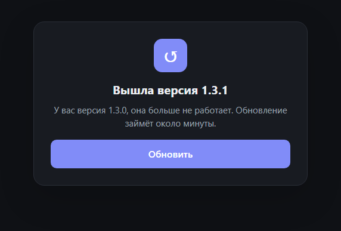
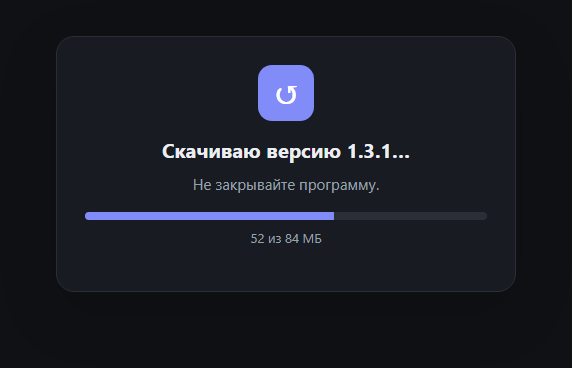

Как обновлять «Возврат» и установленные приложения
Удалённые из App Store приложения сами не обновляются. Показываем, как обновить их одной кнопкой — и как обновляется сама программа.
Приложения, которые вернули на iPhone через «Возврат», App Store не обновляет: в магазине их больше нет. Начиная с версии 1.3.0 программа делает это сама — и сама же обновляется, когда выходит её новая версия.
Обновить приложения на iPhone
- Войдите в Apple ID и подключите iPhone, как при обычной установке.
- В блоке «Обновления приложений» нажмите «Проверить обновления». Проверка занимает до минуты: программа сравнивает версии на iPhone с последними версиями в истории покупок вашего Apple ID.
- Нажмите «Обновить» у нужного приложения или «Обновить все».

Обновления встают в общую очередь установок, прогресс виден в карточке приложения. Данные приложения при обновлении сохраняются: новая версия ставится поверх старой.

Если последняя версия не подходитНовая версия может требовать iOS новее, чем на вашем iPhone. Тогда программа скажет об этом перед установкой — откройте «Версии» и выберите подходящую, как описано в статье про старые версии.
Какие приложения проверяются
Программа проверяет приложения из своего каталога и те, что ставила сама. Остальные приложения на iPhone она не трогает — их обновляет App Store.
Как обновляется сама программа
При каждом запуске «Возврат» проверяет, не вышла ли новая версия. Нажмите «Обновить» — программа скачает файл для вашей системы, проверит его контрольную сумму, установит и откроется заново. Заходить на сайт или GitHub не нужно.
Обновления бывают двух видов:
- Обычное — сверху появляется плашка «Доступна новая версия». Программой можно пользоваться дальше, а обновиться — когда удобно, или отложить кнопкой «Позже».
- Обязательное — с важными исправлениями. Программа показывает окно новой версии и не работает, пока вы не обновитесь.



Если у вас 1.2.1 или старшеАвтообновление появилось в версии 1.3.0, поэтому один раз установите новую версию вручную со страницы загрузки. Дальше обновления будут ставиться кнопкой.
Если обновиться не получается
- «Не удалось проверить обновления». Программе нужен доступ к GitHub. Проверьте интернет и нажмите «Повторить».
- Обычное обновление не установилось. Программа продолжит работать, а причина будет видна на плашке — нажмите «Обновить» ещё раз позже.
- «Нет прав на запись в папку». На macOS перенесите «Возврат» в «Программы», на Linux — в папку, куда у вас есть права на запись. Затем повторите.
- «Файлы новой версии ещё загружаются». Версия только что вышла — подождите пару минут и повторите.
Вернуть приложение на iPhone
Бесплатно, с открытым исходным кодом, для Windows, macOS и Linux.
Скачать «Возврат»